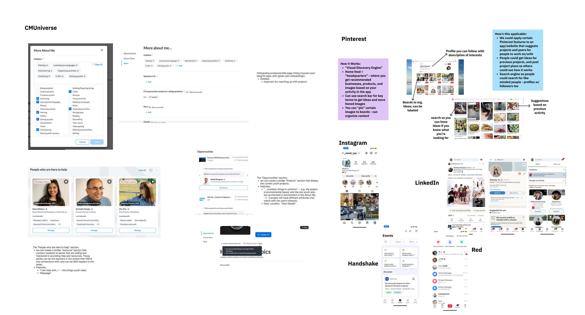
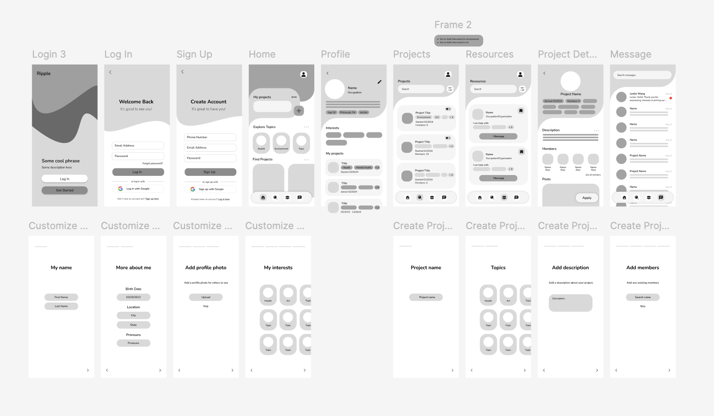

THE PROBLEM
How can youth community programming spaces equip and resource young people to take action on the issues that matter most to them?
Today's youth are increasingly aware and passionate about social and environmental issues but face challenges in translating this passion into action. Community spaces like the YMCA have not fully adapted to the digital-first preferences and diverse needs of young people. This gap leaves many feeling unsupported and disconnected, lacking the tools and resources to effectively contribute to the causes they care about.
IDEATION
Comparative Analysis
PROTOTYPING & USER TESTINGS
Low-Fidelity Wireframe Iteration
The Ripple App, partnering with the YMCA, is a transformative redesign of a previous mobile application project aimed at empowering youth. This iteration enhances functionality and user engagement, creating a comprehensive platform where young individuals can initiate and participate in community projects, effectively connecting them with mentors and like-minded peers, thus fostering a network of proactive changemakers.
Role
User Research, Mobile UI Design, Visual & Branding System
Duration
6 months, Winter 2024 - Spring 2024
Team
Ish Acharya, Jodie Yang
Tools
Figma